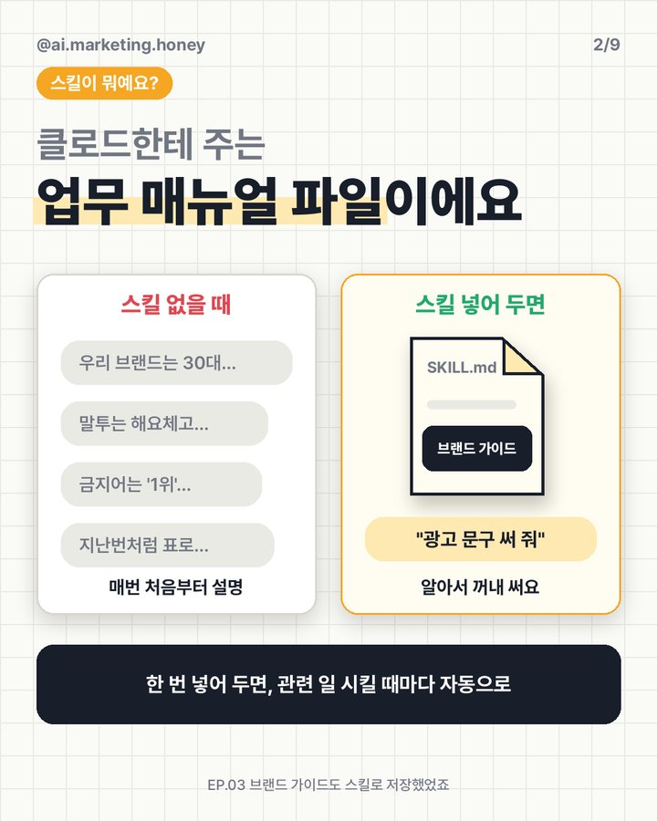
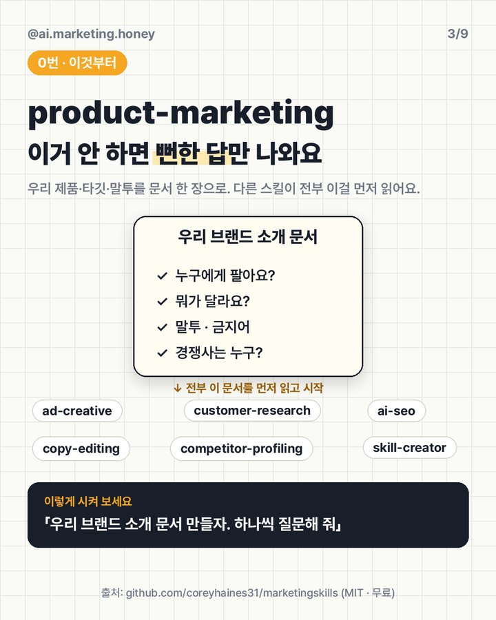
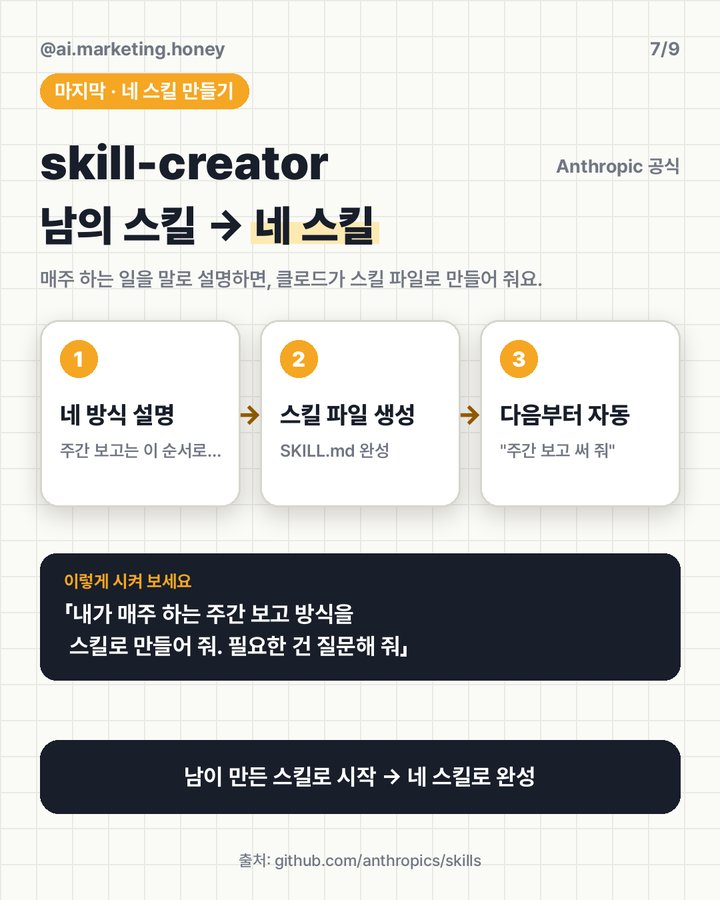

마케터 몸값 두 배
올려주는 클로드 스킬
스킬은 클로드한테 주는 '업무 매뉴얼 파일'이에요. 한 번 넣어 두면, 관련 일을 시킬 때마다 클로드가 알아서 꺼내 써요. 깃허브에서 가장 많이 쓰이는 무료 마케팅 스킬 7개와 받는 링크, 설치법을 모았어요.
01스킬이 뭐예요
매번 "우리 브랜드는 30대…, 말투는 해요체…, 지난번처럼 표로…" 설명하던 걸 파일 하나(SKILL.md)에 적어 두는 거예요. EP.03에서 만든 브랜드 가이드도 스킬이었어요.



02어디서 받나요
마케터 Corey Haines가 만든 마케팅 스킬 50개예요. 카피·광고·SEO·CRO·고객 리서치까지. MIT 라이선스라 무료예요. 10월에도 계속 업데이트되고 있어요.
클로드를 만든 Anthropic의 공식 예시 모음이에요. 그중 skill-creator로 내 업무를 나만의 스킬로 만들어요.
더 찾아보고 싶으면 스킬 모음 목록 ComposioHQ/awesome-claude-skills도 있어요.
03먼저 깔 스킬 7개
각 스킬을 깔고 아래 문장을 그대로 시켜 보세요. [ ] 안만 바꾸면 돼요.
우리 브랜드 소개 문서 만들자. 하나씩 질문해 줘.
💡 우리 제품·타깃·말투·경쟁사를 문서 한 장으로 정리해요. 다른 스킬이 전부 이걸 먼저 읽어요. 이거 없이 돌리면 뻔한 답이 나와요.
지난달 성과 좋은 문구 5개 줄게. 구글 검색광고 헤드라인 15개(각 30자 이내) 만들어 줘. [문구 5개]
💡 성과 데이터를 같이 주면 다음 버전까지 만들어요. 글자 수는 AI가 자주 틀려서 꼭 직접 확인하세요.
이 리뷰 [200]개에서 자주 나오는 불만을 순위로 정리하고, 원문 표현도 붙여 줘. [리뷰 붙여 넣기]
💡 리뷰 속 이름·연락처는 지우고 넣으세요.
이 글이 ChatGPT·AI 검색 답변에 인용되려면 뭘 바꿔야 하는지 순서대로 알려 줘. [글 또는 URL]
이 상세페이지 문구 다듬어 줘. 과장 표현도 따로 짚어 줘. [문구 붙여 넣기]
이 경쟁사 3곳 프로필 만들어 줘. 우리랑 다른 점을 맨 위에. [URL 1] [URL 2] [URL 3]
💡 한눈에 보기 · 포지셔닝 · 기능 · 가격 순서로 정리돼요.
내가 매주 하는 [주간 보고] 방식을 스킬로 만들어 줘. 필요한 건 질문해 줘.
💡 남이 만든 스킬로 시작해서, 내 방식은 내 스킬로 남기세요.
04설치하기 (클로드 앱 · 웹)
- 코드 실행 켜기설정 → 기능(Capabilities)에서 '코드 실행 및 파일 생성'을 켜요.
- zip 받기marketingskills 최신 릴리스에서
스킬이름-claude-web.zip을 받아요. 예:ad-creative-claude-web.zip - 올리기클로드에서 Customize → Skills → + Create skill → Upload a skill로 zip을 올리고 켜요. 관련 일을 시켜서 그 스킬을 쓰는지 확인해요.
메뉴 이름은 앱 버전마다 조금 달라요. 막히면 Anthropic 공식 안내를 보세요. 스킬 기능은 개인 요금제에서 쓸 수 있다고 안내돼 있는데, 안내문이 바뀐 적이 있어서 내 계정에서 한 번 확인해 주세요.
/plugin marketplace add coreyhaines31/marketingskills /plugin install marketing-skills
05써 보기 전에 꼭
- 0번(product-marketing)부터 하세요. 우리 제품 정보 없이 돌리면 뻔한 답이 나와요.
- 스킬은 영어로 쓰여 있지만, 한국어로 시키면 한국어로 답해요. 예시가 미국 기준(구글·메타 중심)이라 네이버·카카오는 지시문에 따로 적어 주세요.
- 남이 만든 스킬은 올리기 전에 한 번 훑어보세요. 특히 스크립트가 들어 있는 스킬은요.
- 광고 문구·숫자는 사람이 마지막으로 확인해요. 회사 데이터를 올려도 되는지 회사 정책도 먼저 보세요.
대행사에서 AI 교육하는 현직 마케터가 직접 써 보고 정리해요.
인스타에서 팔로우